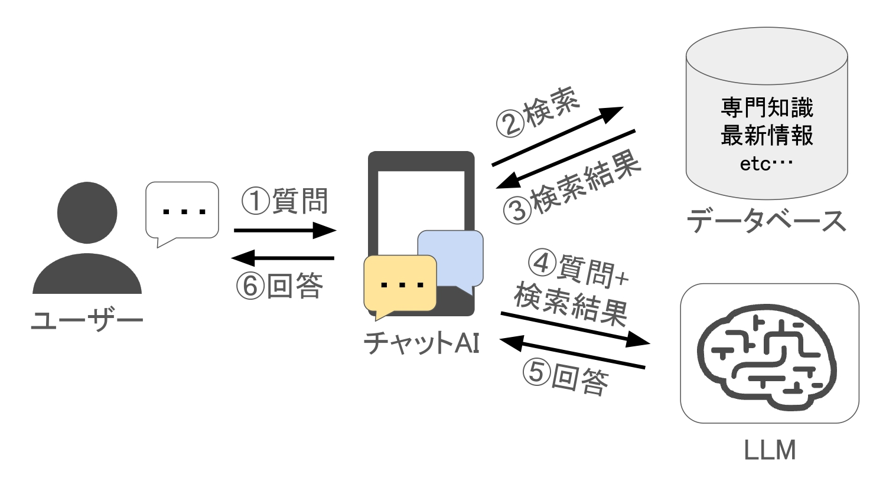

株式会社AI Solutions Labでは生成AIのビジネス活用を行なっております．
今回は弊社で提供しておりますRAG(検索拡張生成)についてご紹介します．
1. はじめに
最近のAI技術の進化は目覚ましいものがありますが，特に注目されているのが，Retrieval-Augmented Generation(RAG)と呼ばれる技術です． このブログでは，RAGが通常の大規模言語モデル(LLM)とどのように異なるか，そしてなぜ多くの業界でその利用が検討されているのかを探ります． 技術的な詳細からビジネスへの応用まで，RAGの魅力を解き明かし，皆様のビジネスにもこの革新的な技術がどのように貢献できるかをご案内します．
2. RAGとは何か？
生成AI(LLM)は人間が書くような自然な文章を生成することができます． LLMは翻訳，要約，質問応答など，さまざまなタスクに使用されていますが，その知識は学習されたデータセットに基づいています． そのため，LLM単体では最新の情報が反映されていない，専門知識が不足している，不正確な情報を生成してしまう(ハルシネーション)などの問題があります．
一方で，最新情報の活用や，特定の専門知識を持つLLMの需要は高まっています． 例えば，社内情報について答えてくれるAIや，最新のニュースを教えてくれるAIなどが求められています． RAGは，こうした需要を解決する一つのアプローチです． RAGを用いることで特定の専門知識に基づく質問についての回答を生成することが可能になり，不正確な情報を生成してしまう(ハルシネーション)を減らすことができます．
3. RAGの利点
RAG技術は，特に次のようなビジネスシナリオで有効です．
- 情報の現行性: RAGは最新の情報に基づいて回答を生成するため，変化が激しい業界やニュース，研究領域などにおいて非常に有効です．
- カスタマイズ可能性: 特定のドメインや業界に特化したデータベースと組み合わせることで，専門的な回答が可能になります．この柔軟性が多岐にわたるビジネスニーズに応えます．
- スケーラビリティ: 大規模言語モデルと組み合わせることで，さまざまな言語やドメインに適応する能力を持ちます．
- エンゲージメントの向上: より関連性の高い，個別化された内容をユーザーに提供することで，顧客のエンゲージメントを向上させます．
4. RAGの仕組み
RAGの動作は大きく分けて二つのフェーズに分類されます．
1. 検索フェーズ
検索フェーズでは，ユーザーからの質問に対して最も適切な情報を見つけ出すことが目的です．具体的には，以下のステップに従います．
- 1. 質問の受付: ユーザーがRAGを用いたアプリケーションに質問を送信します．
- 2. データの検索: アプリケーションは，外部データベースにアクセスし，質問に関連する情報を持つ文書を検索します．この際，キーワード検索，ベクトル検索，またはハイブリッド検索技術が使用されることが一般的です．
- 3. 情報の取得: 関連する文書が特定された後，その内容が取得されます．このフェーズが完了すると，AIは質問に対する答えを生成するための具体的な情報を手に入れたことになります．
2. 生成フェーズ
検索フェーズで取得した文書の情報を基に，実際にユーザーの問いに応じた回答を生成します．
- 4. 情報の統合: 取得した文書のデータを，ユーザーの質問と共にLLMへ送信します．この際，文書の情報がコンテキストとして機能し，LLMによる回答の精度と関連性が向上します．
- 5. 回答の生成: LLMは提供された質問とコンテキストを元に，適切な回答を生成します．
- 6. 回答の提供: 最終的に生成された回答がユーザーに表示されます．
このシンプルながら強力な構造により，RAGは既存の知識ベースの限界を超えて，リアルタイムで，かつ具体的な情報ニーズに応えることが可能です． 検索フェーズでのデータの整形や検索アルゴリズムの選定が精度に直接影響を与えるため，ここには特に注意が必要です． 適切な設計と実装によって，RAGは多様なビジネスアプリケーションにおいてその真価を発揮します．
5. まとめ
Retrieval-Augmented Generation(RAG)は，従来の大規模言語モデルの限界を超え，より動的で正確な情報提供を可能にします． これにより，企業は最新の情報を基にした意思決定を行うことができ，ビジネスのあらゆる側面での正確性と効率が向上します． 弊社のRAGサービスを利用することで，お客様のビジネスが如何に変革されるか，ぜひその目でお確かめください． この技術がどのように皆様の業務をサポートするか，さらに詳しく知りたい方は，ぜひお問い合わせください．